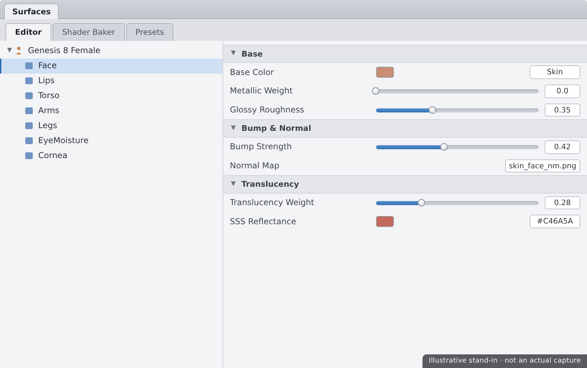
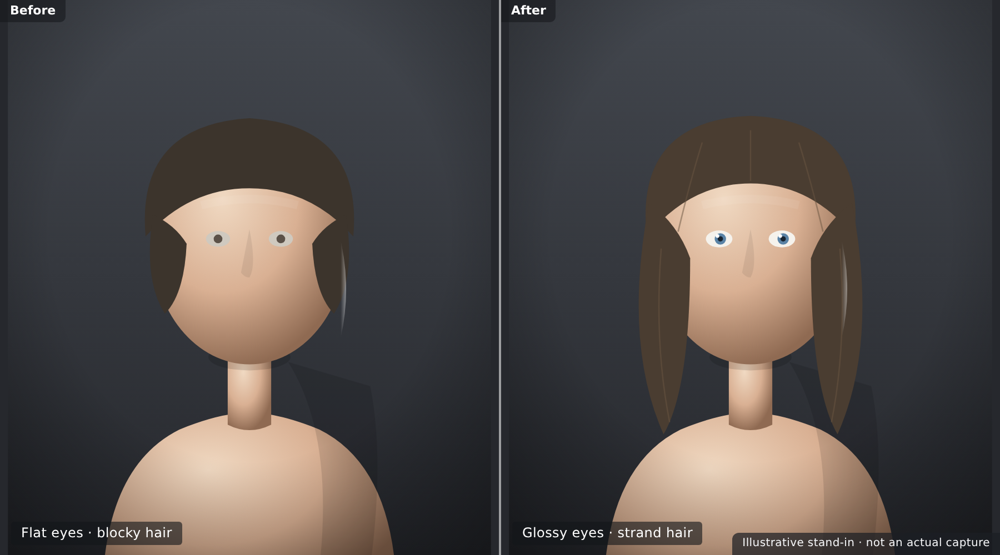

🎨 Lesson 2.3: Materials & Iray Surfaces
Your character is posed and shaped — but the skin still looks like plastic. This lesson fixes that. Surfaces are how light interacts with a figure: what's shiny, what's soft, what glows, what light sinks into. With the Surfaces pane and the Iray Uber shader, you'll turn a flat-looking figure into skin that catches light like skin, eyes that read as wet and alive, and hair that looks like hair. This is the last step that makes a figure believable.
🎯 Learning Objectives
By the end of this lesson, you will be able to:
- Explain what a surface (material) is and how it differs from shape and pose
- Navigate the Surfaces pane and select surfaces on a figure
- Describe what the Iray Uber shader does and its key properties
- Apply material presets to skin, eyes, and hair in one click
- Understand skin surfaces, including subsurface scattering (SSS)
- Set up eye and hair surfaces so they read correctly in Iray
- Make quick surface tweaks — roughness, bump, and color — with confidence
Estimated Time: 60 minutes
Project: Your shaped character with polished, render-ready surfaces — believable skin, lively eyes, and correct hair — ready for lighting in Module 3.
In This Lesson
What Are Surfaces?
You've now reshaped a figure two ways: poses move the bones, morphs reshape the mesh. A surface is the third system — it decides how each part of that mesh responds to light. Same shape, different surface, and a figure can look like marble, wax, rubber, or living skin.
💡 The one-sentence version: A surface (or material) is the set of instructions telling the renderer how a piece of mesh reflects, absorbs, and scatters light — its color, shininess, bumpiness, and translucency.
📖 Definition
Surface / material: the light-response recipe assigned to a named region of a figure — "Face," "Lips," "Eye Moisture," "Fingernails," and so on. Each region is a separate surface with its own properties, which is why you can make lips glossy while keeping skin matte.
A single Genesis figure is divided into many surfaces. The renderer treats each independently, so a character's look is really the sum of dozens of small surface recipes working together.
💡 Surfaces are independent of shape and pose
Changing a surface never moves a bone or a vertex, and reshaping a figure never disturbs its surfaces. You can pose, shape, and surface in any order — though surfacing usually comes after shaping, so you're polishing the character you've actually built.
⚠️ Important Note: This lesson assumes you'll render with Iray, Daz's photoreal engine. Surfaces are engine-specific: an Iray surface and a 3Delight surface use different properties. If a figure looks wrong, confirm you're using Iray materials on an Iray render — mixing engines is a common source of chalky or flat skin.
The Surfaces Pane
Every surface property lives in the Surfaces pane. Open it from Window → Panes (Tabs) → Surfaces if it isn't in your layout. It has two halves you'll switch between constantly.
| Tab | What It Shows | Use It To |
|---|---|---|
| Presets | Shader and material presets you can apply to the selected surface | Drop a ready-made look onto a surface in one click |
| Editor | The full list of properties for the selected surface(s) — color, roughness, bump, SSS, and more | Tweak individual properties by hand |
📖 Definition
Surface selection: in the Editor tab, the figure's surfaces are listed by name in a tree. Click one (like "Face") to edit just that surface, or Ctrl/Cmd-click several to edit them together — handy when the same tweak should hit face, torso, and limbs at once.
💡 The Surface Selection tool
Not sure which surface a spot on the figure belongs to? Grab the Surface Selection tool from the toolbar and click directly on the figure in the viewport — the matching surface highlights in the Editor. It's the fastest way to answer "what is this bit called?"

The Iray Uber Shader
Almost every Iray surface you'll meet is built on one shader: the Iray Uber. Understanding its handful of key properties means you can read — and fix — nearly any material in Daz.
📖 Definition
Shader: the program that turns a surface's property values into a rendered result. The Iray Uber shader is a single, general-purpose shader that can represent skin, metal, glass, plastic, and cloth — you just feed it different property values. "Uber" means one shader to rule them all.
The properties that matter most
| Property | What It Controls | Turn it up for… |
|---|---|---|
| Base Color | The surface's underlying color (usually driven by a texture map) | Changing the overall hue of a surface |
| Glossy Roughness | How sharp or blurred reflections are | Lower = sharper, shinier; higher = softer, matte |
| Bump / Normal | Fine surface detail faked with maps (pores, wrinkles) | Adding tactile detail without more geometry |
| Translucency / SSS | How much light passes into and scatters under the surface | Skin, wax, leaves — anything light sinks into |
| Emission | Whether the surface emits its own light | Screens, glowing signs, light panels |
💡 Textures do the heavy lifting
Most properties can take a flat value or a texture map — an image that varies the value across the surface. Skin's Base Color is a photographic map; its bump is a pore map. When you apply a character's skin, you're mostly loading a matched set of these maps into Uber's slots.
⚠️ Important Note: If a surface renders flat and chalky, it may still be on a non-Iray shader (like the default 3Delight shader). Applying an Iray Uber Base shader preset converts it, but that resets the surface — you'll rely on a material preset or re-load the maps afterward. Prefer applying a proper Iray material preset over converting by hand.
Applying Material Presets
You rarely build a surface from scratch. Material presets load a complete, matched set of surface properties — including all the texture maps — in a single double-click, just like pose and character presets.
📖 Definition
Material preset (.duf): a saved package of surface settings and texture-map assignments for one or more surfaces. Applying a character's "skin" material preset sets Base Color, SSS, roughness, and bump across all skin surfaces at once — an instant, professionally-tuned look.
The surfacing workflow mirrors everything you've learned: start from a preset, then refine.
✅ Pro Tip — match the preset to the whole selection
A skin material preset expects the whole figure selected so it can hit every skin surface. If you apply it with only one surface selected, you may re-skin just the face and leave the body mismatched. Select the figure node in the Scene pane, then apply.
⚠️ Important Note: Material presets are figure-specific — a Genesis 8 skin won't map onto a Genesis 9 figure, because their surface names and UV layouts differ. Just like poses and morphs, keep materials matched to the figure's generation.
Skin Surfaces & SSS
Skin is the hardest surface to fake, and the one property that sells it is subsurface scattering. Without it, skin looks like painted plastic; with it, light glows softly through ears, noses, and fingertips exactly as it does in life.
📖 Definition
Subsurface scattering (SSS): the effect of light entering a translucent surface, bouncing around inside, and leaving at a different point — giving skin its soft, slightly glowing quality. In Iray Uber it's driven by Translucency, SSS color, and scattering settings.
What makes skin read as skin
- SSS / translucency for that inner glow — the single biggest factor in believable skin.
- Realistic roughness — real skin is fairly matte with subtle sheen, not glossy. Overly shiny skin looks sweaty or waxy.
- Bump / normal detail — pores and fine wrinkles that catch light and break up the surface.
- A good base texture — the photographic color map underneath it all.
💡 Backlight to see SSS
SSS is most visible when light comes from behind the figure — the classic glowing-ear effect. If you're judging skin under flat front light you'll barely see it. We'll set up proper lighting in Module 3, but keep in mind that skin and lighting are judged together.
⚠️ Important Note: SSS is render-intensive and looks different across engines. A skin material that's gorgeous in Iray can look grey or plastic if the render is accidentally set to 3Delight, or if SSS is disabled in Render Settings. When skin looks off, check the engine and that translucency is actually on.
Eyes & Hair Surfaces
Two surfaces punch far above their size in selling a character: the eyes and the hair. Both have quirks worth knowing.
Eyes
A Genesis eye is several surfaces stacked: the cornea and eye moisture are clear, wet layers over the colored iris and white sclera. That transparent moisture layer is what makes eyes look wet and alive.
- Eye materials usually come with the character's skin preset — apply skin, get eyes.
- The moisture and cornea surfaces should stay transparent and glossy; if eyes look dull or "dead," those layers may have lost their Iray glass-like settings.
- A tiny specular highlight (a catchlight from a light source) is what makes an eye read as living — lighting supplies it, but the surface has to be glossy enough to show it.
Hair
Hair comes in two broad kinds, and they surface differently:
| Hair type | What It Is | Surface note |
|---|---|---|
| Strand-based (dForce) hair | Actual thin geometry strands | Uses a dedicated hair shader; realistic but heavier to render |
| Card / mesh hair | Transparent-textured sheets shaped like hair | Relies on opacity/cutout maps — the transparency must read correctly in Iray |
✅ Pro Tip — apply the hair's own Iray material
Hair products ship with their own material presets — use them rather than hand-building. If card hair looks like solid blocks, its cutout opacity map likely isn't applied or the shader isn't Iray. Re-applying the product's Iray material preset almost always fixes it.

⚠️ Important Note: Card hair's transparency depends on a cutout opacity map. If you convert the hair to a plain Iray Uber Base by hand, you can wipe that map and the hair turns into solid slabs. Always prefer the hair's supplied Iray preset over a manual shader swap.
Quick Surface Tweaks
Presets get you 90% there. The last 10% — the part that makes a render feel intentional — comes from a few small, safe tweaks you'll reach for constantly.
The tweaks worth knowing
- Glossy Roughness — nudge up to matte down sweaty-looking skin, or down for wet lips and eyes.
- Bump Strength — raise slightly to bring out pores and fabric weave; lower if detail looks harsh or noisy.
- Base Color tint — a subtle multiply on lips or cheeks adds warmth without a new texture.
- Metallic Flakes / top-coat — leave off for skin; useful for car paint, nails, and stylized looks.
💡 Edit several surfaces at once
To keep skin consistent, Ctrl/Cmd-select Face, Torso, Legs, and Arms together in the Editor, then change roughness once — it applies to all of them. Tweaking body surfaces one at a time is how you end up with a face that doesn't match the neck.
⚠️ Change small, test often
Surface values are sensitive — a roughness shift that looks tiny in the number can be dramatic in a render. Make small changes and do a quick spot render (Module 3) of the face to judge them. Guessing from the OpenGL preview alone will mislead you, because it doesn't show SSS or true reflections.
⚠️ Important Note: Before a big session of hand-tweaking, save your scene (or the surfaces as a material preset). There's no single "reset this surface" button once you've changed many values — a saved copy is your undo of last resort if a tweak spiral goes wrong.
Hands-on: Surface a Character
Let's make your shaped character render-ready: skin, eyes, and hair surfaced correctly, then polished with a couple of tweaks.
🏋️ Exercise 1: Skin & Eyes
Objective: Apply believable Iray skin and confirm the eyes read as alive.
Steps:
- Select the figure node in the Scene pane and apply a character's skin material preset (Iray).
- Open the Surfaces pane (Editor tab) and confirm skin surfaces show Translucency/SSS values — that's what makes skin glow.
- Use the Surface Selection tool to click an eye, and confirm the cornea/moisture surfaces are transparent and glossy.
🏋️ Exercise 2: Hair & Tweaks
Objective: Surface the hair and make two safe adjustments.
Steps:
- Add a hair product to the figure and apply its own Iray material preset. Confirm card hair reads as strands, not solid sheets.
- In the Editor, Ctrl/Cmd-select all skin surfaces and nudge Glossy Roughness up slightly to matte the skin.
- Raise Bump Strength a touch on the face to bring out pores. Keep both changes small.
💡 Hint — the skin looks flat, grey, or plastic
Nine times out of ten the render (or surface) isn't on Iray, or SSS/translucency is off. Confirm the render engine is Iray in Render Settings, re-apply the Iray skin material preset, and check that translucency values are present in the Surfaces Editor.
🏋️ Exercise 3: Lock It In
Objective: Preserve your surfaced character.
Steps:
- Save your scene so the whole surfaced, shaped, posed character is safe.
- Optionally, with the figure selected, choose File → Save As → Material(s) Preset… to bank your tweaked skin for reuse.
- Note that your character is now complete for Module 2 — posed, shaped, and surfaced. Next module, we light and render it.
🎯 Quick Quiz
Question 1: What does a surface (material) control on a figure?
Question 2: A character's skin renders flat and plastic-looking. What's the most likely cause?
Question 3: Why should you apply a card hair's own Iray material preset instead of converting it to Iray Uber Base by hand?
Best Practices
✅ Do's
- Start from material presets — apply skin, eyes, and hair from the products, then refine.
- Select the figure node before applying a skin preset so every skin surface updates together.
- Edit skin surfaces as a group to keep face, torso, and limbs consistent.
- Confirm you're on Iray whenever skin or eyes look wrong.
- Save your scene before a hand-tweaking session.
❌ Don'ts
- Don't hand-convert hair or eyes to Iray Uber Base — you can wipe transparency maps.
- Don't over-gloss skin — real skin is fairly matte; shiny skin reads as sweaty or waxy.
- Don't judge surfaces from the OpenGL preview — it hides SSS and true reflections.
- Don't mix render engines — Iray materials belong on Iray renders.
💡 Pro Tips
- Backlight the figure to actually see subsurface scattering at work.
- Spot-render the face to judge small roughness and bump changes accurately.
- Save a tweaked skin as a Material(s) Preset to reuse your look across characters.
- Use the Surface Selection tool to identify any mystery region on a figure.
Summary
🎉 Key Takeaways
- A surface (material) is a region's light-response recipe — color, gloss, bump, and translucency — independent of shape and pose.
- The Surfaces pane has a Presets tab (apply looks) and an Editor tab (tweak properties); the Surface Selection tool identifies regions.
- The Iray Uber shader powers nearly every surface; its key dials are Base Color, Glossy Roughness, Bump, Translucency/SSS, and Emission.
- Material presets load matched skin, eye, and hair looks in one click — select the figure node first, and match the generation.
- Believable skin needs SSS; eyes need a glossy moisture layer; card hair needs its cutout map — so prefer supplied Iray presets over hand conversion.
📚 Additional Resources
- The Surfaces pane — official Daz user guide
- The Iray Uber shader — Daz documentation
- About the Genesis 8 figure
🚀 What's Next?
That's Module 2 complete — your character is posed, shaped, and surfaced. But surfaces only come alive under light. In Lesson 3.1 — Building a Scene, we start Module 3 by giving your character a world to stand in: environments and props, hair and clothing, and the cameras that frame a shot worth rendering.
🎉 Your character is ready!
Posed, shaped, and now surfaced with believable skin, living eyes, and real hair — you've built a complete character from the Genesis base. Everything from here is about putting them in a scene and lighting them beautifully. That's exactly where Module 3 begins.